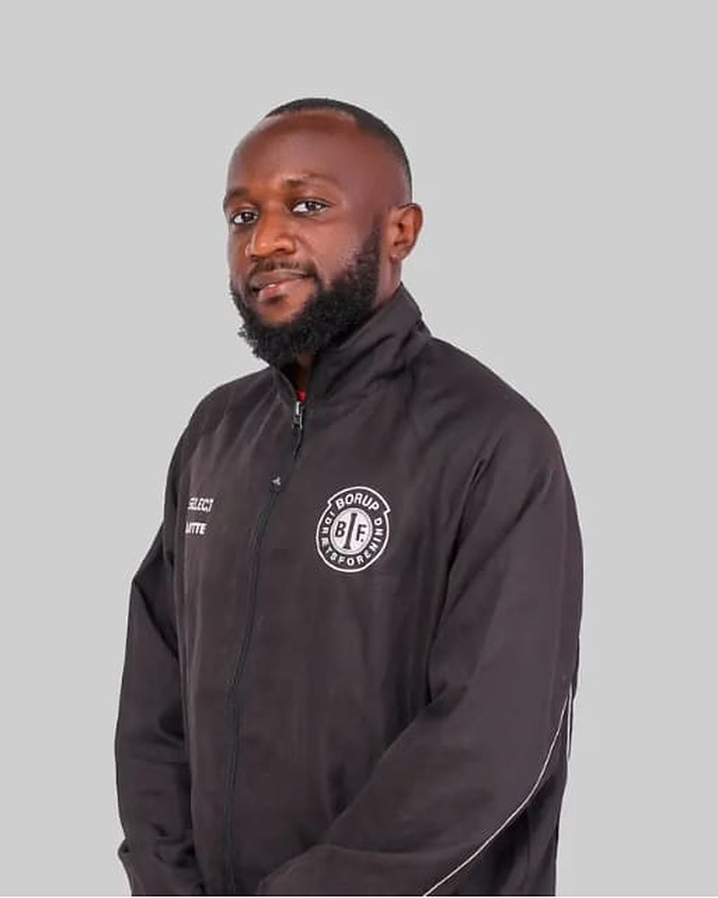
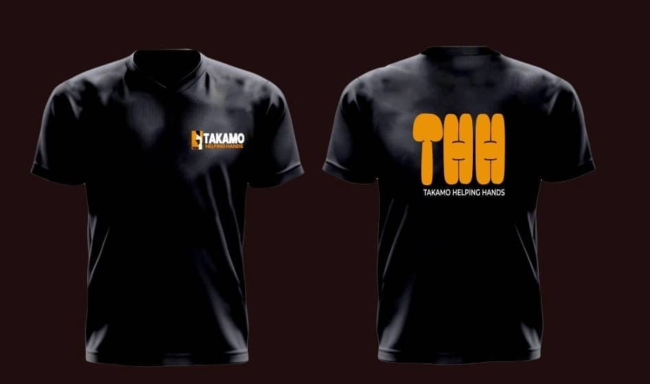

Our vision
To build a compassionate and inclusive society where vulnerable individuals and families can live with dignity, access opportunities, and enjoy a better quality of life.
Buea, Cameroon · Since 2023
Takamo Helping Hands THH supports elderly persons, widows, orphans and vulnerable families in Buea and the surrounding communities — with food, care, education and people who show up.
Who we are
Takamo Helping Hands THH is a humanitarian initiative based in Buea, Cameroon. We reach out to vulnerable people who are too often overlooked — elderly persons living without adequate care, widows, orphans and families facing hardship.
We mobilize volunteers, partners and well-wishers to bring practical help: food, essential supplies, compassionate visits and support that restores dignity.
To build a compassionate and inclusive society where vulnerable individuals and families can live with dignity, access opportunities, and enjoy a better quality of life.
To support vulnerable individuals and communities through humanitarian assistance, elderly care, education, food security initiatives, water and sanitation projects, youth empowerment, livelihood development, and strategic partnerships that promote sustainable change.
Our areas of focus
Supporting elderly persons experiencing hardship through food assistance, essential supplies, compassionate visits, and initiatives that promote dignity and well-being.
Providing practical assistance and mobilizing community support for individuals and households facing difficult circumstances.
Helping vulnerable individuals and families access food while exploring sustainable approaches to improving food security.
Promoting clean environments, improved hygiene practices, and access to safe water through community initiatives and appropriate infrastructure projects.
Supporting educational opportunities for children from disadvantaged backgrounds through school materials, back-to-school initiatives, and other appropriate interventions.
Encouraging young people to develop skills and pursue opportunities, and helping vulnerable adults start small income-generating activities.
Mobilizing volunteers and community members to identify local needs, organize outreach activities, and develop practical responses to social challenges.
Our work in action
Real moments from our outreach in Buea and the surrounding communities. Tap a video to play it with sound.
More on TikTok: @takamo237
Our story
It started with bars of soap for the widows in his community.
The story of Takamo Helping Hands THH began long before the organization took shape. From the age of 20, Giresse Takamo had a strong desire to help people experiencing hardship, particularly widows and vulnerable individuals. Even with limited resources, he found ways to share what he had. One of his earliest acts of kindness was buying bars of soap and distributing them to widows in his community.
Although these acts were small, they reflected a growing conviction that everyone deserves dignity, compassion, and support, regardless of their circumstances. In 2023, this longstanding desire developed into a clearer humanitarian vision. Through what he describes as a personal revelation, Giresse felt inspired to establish Takamo Helping Hands THH and turn his desire to help others into organized community action.
One experience profoundly strengthened his commitment. While supporting Mummy Helena Tabe, a vulnerable woman in his community, Giresse discovered that another person, Mr. Etienne Onana, was living in extremely difficult conditions in the same household — confined to a single room for years, with little help for his daily needs. He realized that vulnerable people, especially elderly individuals without adequate care, could be suffering silently within their own communities.
Having lost his grandparents at a young age, Giresse also understood the personal significance of elderly care. He made a commitment: he would not stand by while elderly people and other vulnerable individuals suffered without assistance when something could be done to help them.
From that conviction, THH has continued reaching out to vulnerable individuals and families through community visits, food assistance, volunteer engagement, and other support. Our journey is still growing, but our purpose remains clear: to reach those in need, restore hope where it has been lost, and encourage people to rise together by helping one another.

Meet our founder
Founder, Takamo Helping Hands THH
Giresse Takamo is a Cameroonian humanitarian advocate and community development enthusiast whose commitment to helping vulnerable people inspired the creation of Takamo Helping Hands THH in 2023.
His desire to serve began at a young age, sharing basic necessities with widows and others experiencing hardship, even when his own resources were limited. Through THH, he mobilizes volunteers, partners, and well-wishers to support elderly persons, widows, orphans, disadvantaged families, and other vulnerable individuals.
His vision extends beyond immediate assistance: sustainable programs that promote dignity, improve livelihoods, expand educational opportunities, and create lasting impact. While THH continues to develop its organizational structures and work toward formal registration, Giresse remains committed to building its capacity, strengthening partnerships, and expanding its reach.
“We rise together when we help one another.”
Give
Every gift helps us reach an elderly person living alone, a widow struggling to feed her family, or a child who needs school materials. Choose how you'd like to help.
Ways to donate
Please include your name so we can thank you. For supplies, contact us to arrange drop-off in Buea.
Donate nowGive once, any amount, to where the need is greatest.
Become a Helping Hand with a regular gift — steady support we can plan around.
Food, soap and hygiene items, clothing and school materials. Contact us to arrange drop-off in Buea.
Organizations, churches, schools and businesses can sponsor an outreach or a program.
Get involved
Volunteers are the heart of THH. Join a community visit, help at an outreach, support a back-to-school drive or share your skills. Tell us a little about yourself and we'll be in touch.

Contact
Based in Muea, Buea, in Cameroon's Southwest Region. Questions about our work, someone who needs help, or a partnership idea? Reach out anytime.